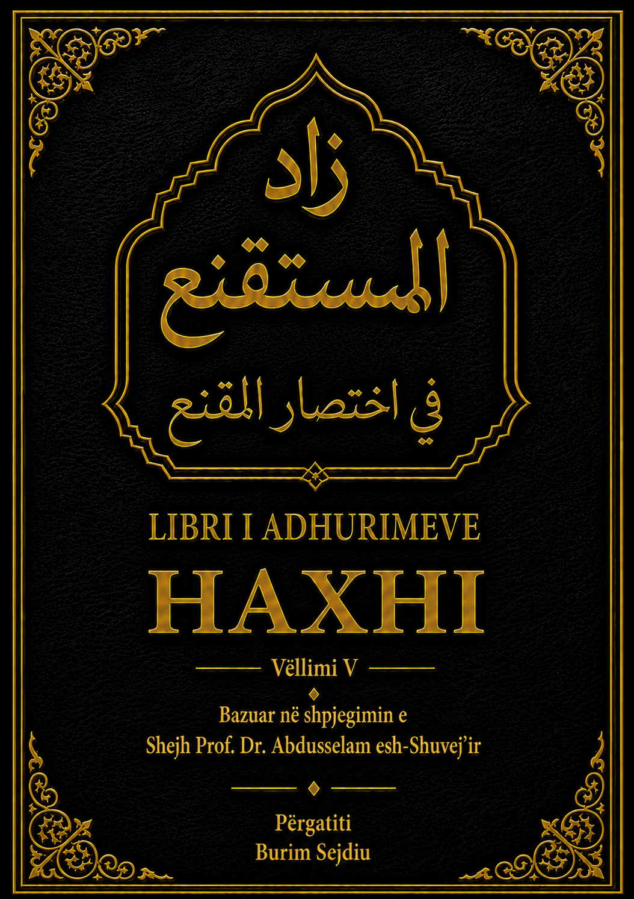

Vëllimi V
Haxhi
Zad el-Mustakni‘ në përmbledhjen e El-Mukni‘
زاد المستقنع في اختصار المقنع
Botim në gjuhën shqipe. Haxhi dhe umreja, mikatet, ihrami, tavafi, saji ndërmjet Safas dhe Merves dhe kurbani.
Temat në libër
Pyetje nga vëllimi
Si citohet ky vëllim
Sherafuddin Ebu en-Nexha Musa ibn Ahmed ibn Musa el-Haxhavi el-Makdisi es-Salihi. Zad el-Mustakni‘ në përmbledhjen e El-Mukni‘. Vëllimi V, Haxhi. Me shpjegimin e shejh Abdusselam ibn Muhamed esh-Shuaj‘ir. Përgatiti Burim Sejdiu.
Për të cituar një paragraf të veçantë, hape në libër dhe përdor butonin «Cito».